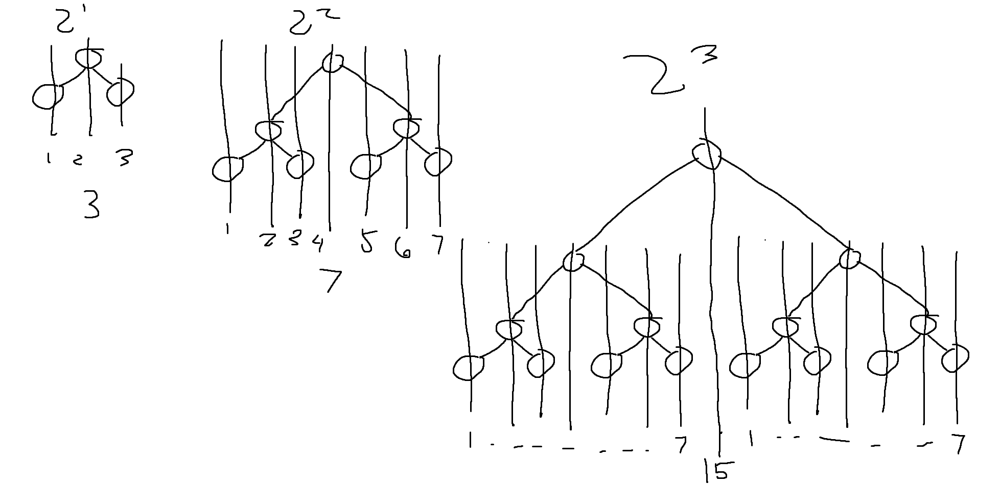


<div class="play">
    <div class="card text-center">
        <div class="card-header">
            Project Week #1
        </div>
        <div class="card-body">
            <h5 class="card-title">
                Visualizing the Binary Search Tree Data Structure Algorithm using
                Html,CSS,JavaScript
            </h5>

            <div class="col-md-12">
                <div class="input-group input-group-sm w-25 mx-auto">
                    <input type="number" class="form-control" id="node" name="node" placeholder="enter number to add in bst">
                    <div class="input-group-prepend">
                        <button class="btn btn-outline-secondary" type="button" id="addNodeButton" onclick="addNode()">Add</button>
                    </div>
                </div>
            </div>


            @*ALERTS*@

            <div class="div_bst_alert">
                <div id="bst_logs" class="alert bst_alert fade show" role="alert" data-dismiss="alert">
                    &nbsp
                </div>
            </div>


            <div>
                <canvas id="myCanvas"></canvas>
            </div>


        </div>

    </div>
    <div class="container" style="margin-top:1%">
        <div class="card">
            <h5 class="card-header">Documentation</h5>
            <div class="card-body">
                <h5 class="card-title">Design</h5>
                <p class="card-text">
                    I had many iterations for this project as I did not really know how to use canvas and thus was not able to design prior to creating the project.
                    The design I ended up with is animate while in the bst algorithm code which isn’t the best but I had to rewrite a lot of my code so 😐.
                    Basically my code works like this -- with the recursion of the bst algorithm I call the animate functions. The code below is for going left
                    in the algorithm where the current node data is greater than what is being added.
                </p>


                <pre>
                <code>
                                    {{doc1}}
                            </code>
                        </pre>


                <p>
                    As you can see in this design, the animation part of the application is done together with the bst algorithm. This includes calculating the coordinates of the nodes
                    to be drawn in the canvas, animation effects, drawing connecting lines etc.. The better design that I had in mind was to isolate the animation and bst algorithm. Which
                    would make the code cleaner and would have made the redesigning and debugging a liitle bit better.
                </p>


                <h5 class="card-title display-4">How It Works</h5>
                <h6 class="card-subtitle">Asynchronous Code</h6>

                <p>
                    To implement my design, I had to use async await to allow the animation to be executed in between instances of the recursion. The code below shows the animation functions to
                    return promises.
                </p>

                <pre>
                <code>
                            {{doc2}}
                        </code>
                        </pre>

                <br />

                <h5 class="card-subtitle"> Maths </h5>
                <br />
                <h6 class="card-subtitle"> X Coordinates </h6>

                <p>
                    As you add a level on the bst, you can see the tree being remapped to fit the next level of nodes. I found out that
                    the distance between the node coordinates is calculated by the difference of BST level and the current node level. Since this is a binary tree, the next level below means you need to make space
                    for 2 times the amount of what the current level has. To explain this better see my paints skills below. *This is probably easy using some module to do animation*
                </p>

                

                <p>
                    Basically, calculate the space needed for everything under you(the current node) Hence the (this.bst_level - node.level - 1). And that should give you the distance to your parent node.
                    newNode.x = node.x - temp;
                </p>
                <p>
                    <b>this.bst level</b> is the level of the binary search tree <br />
                    <b>node.level</b> is the level of the node being placed in the canvas <br />
                    <b>80</b> is the x distance between xs  <br />
                    <b>newNode.x</b> new node to be added x attribute <br />


                    <pre>
                    <code>
                            let temp = (Math.pow(2, (this.bst_level - node.level - 1)) * 80);
                            newNode.x = node.x - temp;
                        </code>
                    </pre>

                    <h6 class="card-subtitle"> Connect Line Animation </h6>
                <p>
                    Animation is possible with the <b>setInterval(frame, speed)</b> function. Basically it runs frame function every 10 milliseconds. This number is the speed on which the animation would work -- higher = slower<br />
                    For the animation to work, I needed to calculate the x,y points of the line connecting the nodes. I decided to go with 100 instances for the animation.
                    Dividing this number by the length of the x and y would give me where to draw
                    the next point every instance of the setInterval function with even steps of both x and y. Direction - is needed since this function is used both nodes going left or right. My first equation that I used was
                    to divide the y by x so that for every 1x i move, I'll move y by the calculated value. This would work but it would make the speed of the animation dependent of x. If C1 --> C2 is 2x longer than C2 --> C3 then the animate line
                    function would take 2x as well. Whereas the current design would make both times the same.
                </p>
                <div class="col-md-12">
                    <div class="input-group input-group-sm w-25 mx-auto">
                        <input type="text" class="form-control" id="example_line" name="node" placeholder="enter speed(1000 = 1 Second)">
                        <div class="input-group-prepend">
                            <button class="btn btn-outline-secondary" type="button" id="example_line_button" onclick="changespeed()">Start</button>
                        </div>
                    </div>
                </div>
                <canvas id="animate_line_example"></canvas>
                <pre>
                <code>
                                {{doc3}}
                            </code>
                        </pre>

                <h6 class="card-subtitle">Whole JavaScript Code</h6>


                <pre>
                <code>
                        {{doc4}}
                        </code>
                    </pre>
            </div>
        </div>
    </div>


    <div class="card-footer text-muted">
        Updated January 9 2021
    </div>


    <script src="https://code.jquery.com/jquery-3.5.1.slim.min.js" integrity="sha384-DfXdz2htPH0lsSSs5nCTpuj/zy4C+OGpamoFVy38MVBnE+IbbVYUew+OrCXaRkfj" crossorigin="anonymous"></script>
    <script src="https://cdn.jsdelivr.net/npm/bootstrap@4.5.3/dist/js/bootstrap.bundle.min.js" integrity="sha384-ho+j7jyWK8fNQe+A12Hb8AhRq26LrZ/JpcUGGOn+Y7RsweNrtN/tE3MoK7ZeZDyx" crossorigin="anonymous"></script>
    <script>
    </script>
</div>
